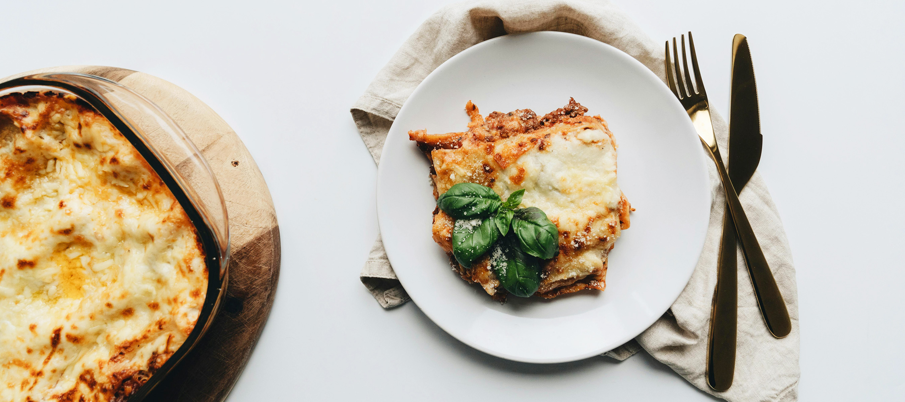

Ingredients:
Serves: 8
Bechamel Saucee:
- 5 tbsp of unsalted butter (plus 2tbsp for the lasagna)
- 1/2 cup all-purpose flour
- 4 cups whole milk (at room temperature)
- Pinch freshly grated nutmeg
- 1 1/2 cups tomato sauce
- Salt and white pepper
- 1/4 cup of extra-virgin olive oil
- 1 pound of ground chuck beef
- Salt and pepper
- 1 1/2 pounds of ricotta cheese
- 3 large eggs
- 1 pound of lasagna sheets (cooked al dente)
- 2 packages (10 ounces each of frozen chopped spinach, thawed and squeezed dry)
- 3 cups shredded mozarella
- 1/4 cup of freshly grated Parmesan
Simple Tomato Sauce:
- 1/2 cup of extra-virgin olive oil
- 1 small onion (chopped)
- 2 cloves of garlic (chopped)
- 1 stalk of celery (chopped)
- 1 carrot (chopped)
- Sea salt and freshly ground black pepper
- 2 (32- ounce) cans of crushed tomatoes
- 2 dried bay leaves
- 4 tbsp of unsalted butter(optional)
Cooking Intructions
- Preheat oven to 375° fahrenheit.
- For the bechamel Sauce: In a 2 quart pot, melt 5 tbsp of butter over medium heat. When the butter has completely melted, add the flour and whisk until smooth, for about 2 minutes. Gradually add the milk, whisking constantly to prevent any lumps from forming. Continue to simmer and whisk ovef medium heat until the sauuce is thick, smooth and creamy for about 10 minutes. The sauce should be thick enough to coat the back of wooden spoon. Remove from the heat and add the nutmeg and tomato sauce. Stir until well combined and check for seasoning. Set aside and allow to cool completely.
- In a medium sized bowl, thoroughly mix the ricotta and eggs. Season with salt salt and pepper. Then, set it aside.
- Into the bottom of a 13 by 9-inch baking dish, spread 1/3 of the bechamel sauce. Arrange the pasta sheets side by side, covering the bottom of the baking dish. Evenly spread a layer of all the ricotta mixture and then add a layer of all the spinach. Arrange another layer of pasta sheets and spread all the ground beef on top. Sprinkle 1/2 of the mozzarella cheese on top of the beef. Spread another 1/3 of the bechamel sauce. Arrange the final layer of the pasta sheets and top with the remaining bechamel sauce, mozzarella and Parmesan cheeses. Cut the remaining 2 tbsp of butter into 1/4-inch cubes and top lasagna.
- Line a large baking sheet with aluminim foil. Place the lasagna dish on top, cover and put on the middle rack of the oven and bake until top is bubbling, about 30 minutes. Remove cover and continue to bake for about 15 minutes.
- For the Simple Tomato Sauce: In a large casserole pot or Dutch over, heat oil over meduim high heat. Add onion and grarlic and saute until soft and translucent, about 5 to mimnutes. Next, add celery and carrots and season with salt and pepper. Saute until all the vegetables are soft for around 5 to 10 minutes. Then, add the tomatoes and bay leaves and simmer uncovered on low heat for 1 hour or until thick. Lastly, remove bay leaves and check for seasoning. If the sauce still taste acidic, add unsalted butter, 1 tbsp at a time to round out the flavors.
- Add 1/2 of the tomatosauce into the bowl of a food processor. Process until it is smooth. Continue with the remaining tomato sauce.
- If you are not using all the saucce, allow it to cool completely and pour 1 to 2 cup proportion into freezer plastic bags. This will freeze up to 6 months.
Dish Images
Nutritional Information
- Calories:1171g
- Fat:73g
- Sodium:1103mg
- Carbs: 82g
- Protein:51g